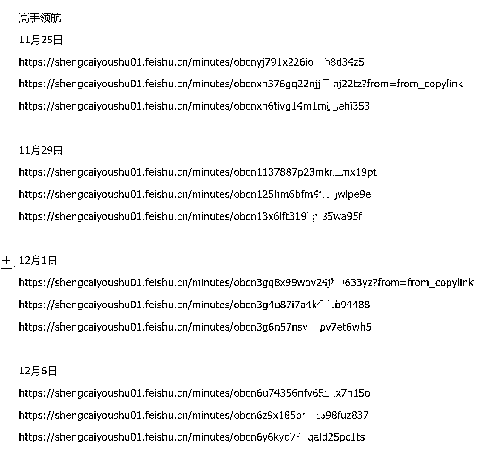
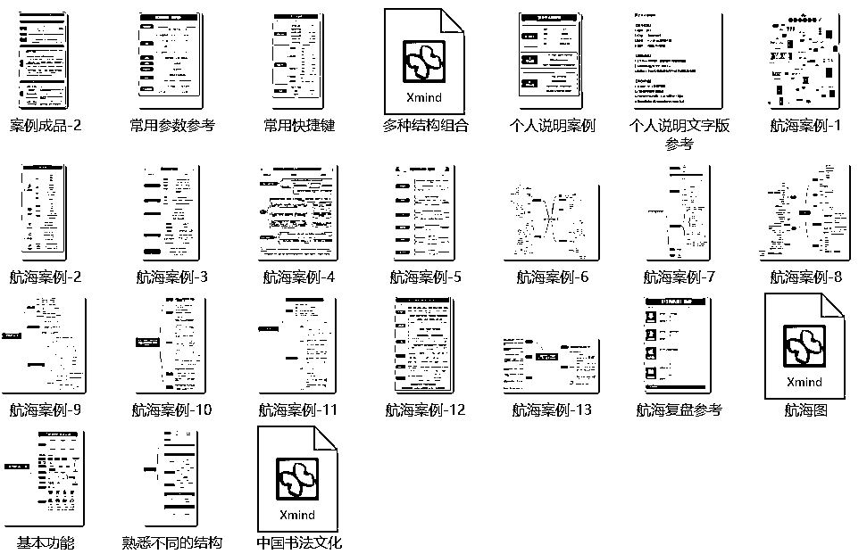
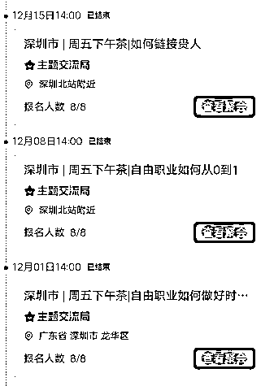
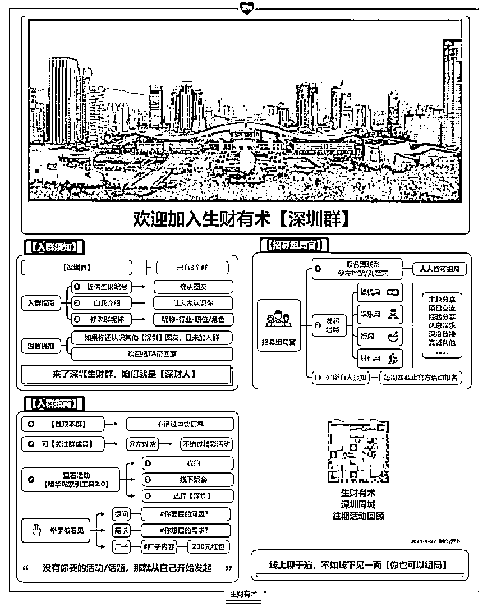
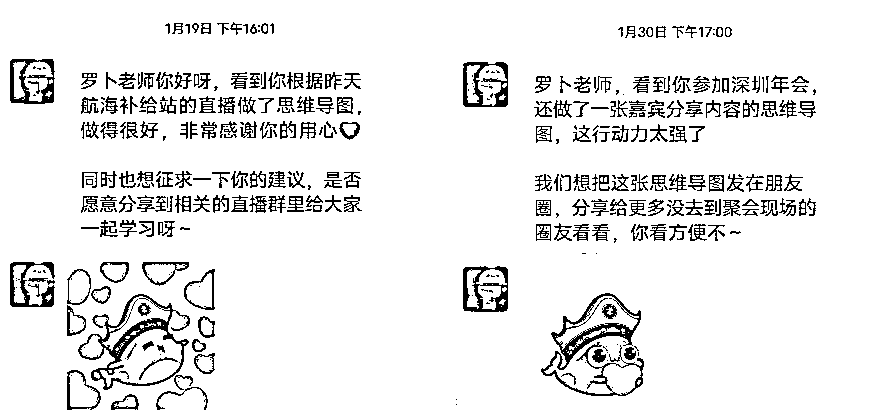
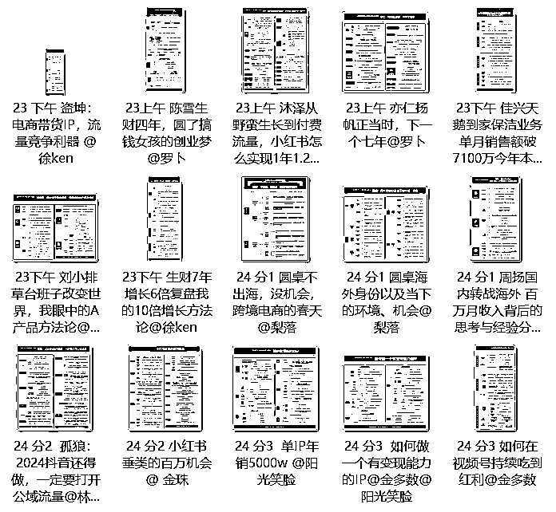

来源：https://dakhb269es.feishu.cn/docx/TiR3dk8MboSn2RxcZmlccOppntV
大家好，我是罗卜，距离加入生财1周年，还有22天；
在加入生财时，我是一个小透明，自己过去做的事，不值一提
在我定下要在生财做一场竖屏思维导图分享的目标时
我怂了，我问自己能做到吗？内心有个微弱的声音告诉我“能”
我要通过怎样的方式去做呢？我自己不知道，也没有别人告诉我
那就交给时间吧
经过前3个月的迷茫期，因共读《亦仁益语》，让我找到制作竖屏思维导图的方向
直到今天，我在生财已经带队制作4次导图，担任志愿者4次和2次思维导图特训教练，在生财和团队制作导图达400+张
下面就是我和大家分享我在生财这一年都做了哪些？
非常感谢，生财的邀请，在12月和3月生财发起的小航海里，担任思维导图特训这条船的教练。
为方便阅读，请移步飞书:
主要内容
1.加入生财前
2.在2023年418正式加入
3.尝试写第一篇帖子
4.做了4期志愿者
5.竖屏思维导图初试探
6.与胖大魔的相识
7.航海导图第一次
8.一个人的10月续航
9.遇见贵人陈雪
10.研学社导图营
11.11月航海内测邀请，第2次组队
12.12月开思维导图特训航海，第3次组队
13.新晋深圳“组局之王'
14.因为导图收获很多惊喜
15.邀请参与杭州航海家导图制作
16.说到最后
在没加入前，就已经了解，也参加过3天体验营，但迟迟没有加入。
是因为觉得我一个没资源，没背景，能力还不足，加入生财又能获得什么？
始终没有想明白，身边也没有人告诉我，仅有的了解都是从生财有术公众号获得，还有就是其他营销号获得，并没有让我有加入的冲动。
虽然个人也一直在探索副业，想做好自媒体，自己也倒腾了小红书，抖音，视频号等，但都没有做起来。
很多项目我认为只是看起来别人轻易拿到结果，加入生财后才知道他们背后付出了很多。
在领取3天体验卡的时候，因为时间短，信息量又非常大，并没有给我加入的冲动，这么看，我付费还算很理智，并不会因为一时脑热而冲动消费。
就这样，一直与生财保持忽远忽近的感觉，也会经常看公号推文，看到这些文章后，没有几个能抵得住诱惑，今天不是这个通过小红书赚多少钱，明天就是那个通过某个项目赚了多少钱。
但我知道自己几斤几两，如果这些项目换做是我，也不一定能做到这么好，在后面加入后自己也做了一些尝试，发现也不是这么轻而易举的能做到，至少我是这样。
当然也看到身边很多圈友确实真的很牛（我不敢靠近的那种，内心对大佬还是有敬畏，害怕与大佬链接），现在我会通过竖屏思维导图的项目去与大佬们建立合作，期望可以给对方提供一点点价值。
至今还记得，我是在好友“简单”的朋友圈看到一张生财拉新的海报，我被海报的周边福利所吸引，就付费正式加入生财，后面才得知是加入靠谱大佬的战队，也加入生财陪伴群，那段时间战队也给了我们这些新人一些指引，如何用好生财资源？如何在生财资源找到适合自己的，通过参与一些活动还能获得怎样的福利等。
真的是一步一步教生财小白，在生财找到自己想要的资源。
我像一个小学生一样，跟着生财的入门指引，完成了了解生财8天入门的学习。
https://wx.zsxq.com/dweb2/index/topic_detail/412551244212858(每个生财新人都建议多看几遍，老圈友也可以温故知新）
看完后，其实自己还是蒙圈状态，毕竟自己能力有限，认知也还不够，还得多围观多学习，靠近优秀的人。
那我先找找自己的优势，自以为自己读了几本书，写了一堆文字，好像就能写好一篇帖子，实际上并不是想象的那么简单，我在加入后还认真写了两篇帖子，这两篇还是靠谱给了我很多建议。
也会和大部分新人一样，在探索期，留下了自己想在生财小目标。
近期我也回顾了加入生财写的几个目标。
当时正好也看到涛哥的文章，说到一个点“做好工具人”，发现涛哥竟然给我这条目标点赞，得到大佬的点赞，让我有了更大的动力。原来我与涛哥的链接从此刻就已经开始了。
但我那会并不知道我能做一个怎样的“工具人”，虽然目标写着在星球做一场竖版思维导图的分享。
当我写完后，其实我就后悔了，如果我对那会的竖屏思维导图技能打个分，我觉得只有4分（满分10），只能算是会做竖屏思维导图。
尽管如此，我也并没有开启竖屏导图的分享，也一直觉得思维导图这个技能大部分人都会，只是用了一些技巧，让竖屏思维导图更适合手机阅读和方便分享。
写完这个目标，我就往写帖子的方向，先大胆去写，我也知道自己写的肯定没有那些实战过的大佬优秀，但我认为有些信息，它会不会也存在信息差呢？
我就想把了解的微信小技巧，做个汇总，那就做个100小技巧，很多可能已经迭代，但还有一些我认为现在依然可以使用，或许还有很多人真的不知道。
花了几天，算是踏出写帖的第一步。都说先完成再完美，那就写起来。
第一篇是基于个人平时愿意去了解，探索一些新发现，至少在我的朋友圈，我认为我是一个懂微信操作的人，只是对微信的一些功能，做了一些探索和学习。
做私域营销，不得不掌握的100个技巧，学会效率翻倍。
随后又写了另外一篇关于手机和二手机的，这个是我一直在主业的同时兼职做的一个副业项目，也是通过好友介绍，在华强北有点自己的资源，也就顺便在朋友圈分享，佛系运营，有人咨询就解答，有人下单就去拿货，那会公司离华强北比较近，之前每一台都是亲自拿货，亲自发货，后面熟悉后才让档口一件代发，这篇文章期望可以对感兴趣的圈友了解一二。
通过朋友圈卖手机/二手机，赚到了第1块钱
这篇确实都是亲身经历，也通过这个有了对副业的了解，仅限于手机和二手机及周边数码产品等。
我记得一个老师和我说了这么一句话，“你不发声，就不会发生”，可以是任意你擅长的，文字，语音，视频等。
来，大家跟着我的思路，再次回到加入生财后，除了写了2篇帖子，我还做了哪些？
第一期（5月）报了小红书运营
第二期（8月）报了朋友圈运营
第三期（12月）报了自由职业
第四期（3月）报了小红书达人
每一个都是自己想了解的，所以就优先选择了第一志愿，一次都没被调剂过，建议每个圈友至少都担任一次志愿者，去体验这个角色，去感受，去经历(很值）。
在没有做生财志愿者时，虽然有做过公益读书会志愿者，两者我觉得还是有差别，读书会的志愿者，就是引导书友一起阅读分享，定期组织线下活动，交流一些读书心得等。
但生财的志愿者，我报名还犹豫了好久。
我内心还是有些抗拒，我一个刚加入生财不久的人，担任志愿者，同时也不了解这些项目的，会不会对船员有些不负责？船员会不会比我还厉害？船员提的问题我不会怎么办？会不会遇到大佬？内心依然是有些害怕，害怕去面对这些问题。
但既然选择了志愿者，那么就从这个角色开始生财志愿者之旅，截止2024年3月，我已经连续做了4期志愿者，我应该不是做的最好的，也不会是做的最差的，但我认为我做的这些志愿者工作，至少对得起志愿者这几个字，也帮助100位左右的船员成功上岸。
在参加5月航海的时候，我记得在航海期间只做了2张导图。
通过这张，也链接到分享的教练，在该航海有一点点小水花，也通过这张被圈友点赞，好评等。
但这期航海很快就结束了，我做这张图的时候，并没有想过，我会往航海分享的角度去想，即使航海结束后，我依然觉得自己还是一个小白，虽然参加了航海，但并没有拿到期望的结果，但也不能气馁，继续保持热情，继续保持热爱，继续出发。
我一直认为胖大魔是我的贵人，是他让我把竖屏导图捡起来，去分享，去传播，可以这么说，没有胖大魔的支持和鼓励，也就可以说没有目前思维导图特训航海，更不会连续开展2期。
为什么这么说？没有他的鼓励，我就不会那么快的通过竖屏思维导图被看见；没有他的邀请，可能我也不会参与《亦仁益语》的共读，也不会想着在我们分享后，然后制作竖屏思维导图分享在生财研学社。
我和胖大魔相识，是在5月的志愿者，那会我并没有加他微信，毕竟那段时间点赞榜单一直有他，我觉得他肯定是一个很厉害的大佬，也就没有加他微信。
直到后面看见有湖南圈友同城社群的出现，我发现我和大魔的交集多了一些，我们是湖南老乡，他在深圳待过，也做过汽车行业，也是运动爱好者，就这样把我和大魔的关系拉的非常近，还得是他邀请我参加共读。
生财研学社发起也是由大魔，老侃，云舒，超强哥，鞭炮，费曼同学，段子手，笑笑，小竹，九歌，挖坑的萝卜，还有我一起创建，也是因共读《亦仁益语》我们才聚在一起，他们也是我在竖屏思维导图路上的亦师亦友。
我的第一批竖屏导图制作团队就是从这里产生，第一批生财航海制作也是我们一起参与，组织，并把我推到最前面，因为有他们在背后的支持，非常感谢在生财遇见这群小伙伴。
胖大魔看到我做了几天竖屏导图的分享，我就和他商量，能不能在8月航海大家一起来玩，我们已经组织过共读，好几次都复盘到深夜，还在讨论如何在生财研学社怎么选主题，怎么分享，怎么运营。
如果让我评价那个阶段，我觉得我们更像是一个草台班子，去做我们想做的事，因为这样我们第一次线上组织也很成功，参与人员达300多人。也就意味着，有这么多圈友看过我做的导图，有些甚至还分享了。
当我们决定要一起制作8月航海导图的时候，我们商量了分工合作，我来安排培训，导图模板，各种选择所报的航海，每人至少做一个航海。而我这一期独自完成了4个航海，前面也说了，8月我也是志愿者。
定模版
当我开始用制定模板的时候，我考虑的几个因素，是继续沿用共读的模板，还是重新优化升级，记得那会做了3个样式，最后选择了上面的这个模板。
在配色上也有些大胆，一直看着这个颜色与生财的logo，各种见过的生财PPT很相似，那会我对导图的制作，可以说从4分已经升级到6分，我就可以教他们了，好在大家之前都使用过，所以只花了2小时的培训，然后就开始制作了。
人员分工
我是考虑尽量不要影响每个人的工作和生活，在业余时间完成，每天至少有一张导图，无论多晚，都要在我们导图群分享，然后我们彼此把导图分享在所参与的航海社群，当然也会分享在志愿者社群，后面发现很多圈友和志愿者都帮忙分享和传播，就这样，在8月，有一群人在航海社群分享的看似一样的导图。
先制作，然后发群里大家看下是否有没问题，有问题及时修改，其实大部分都是我来审核，审核几天，大家也掌握了方法，后面我也省事多了。
基于这一次的线上导图制作的合作，为后面制作打下了坚实的基础。
注意事项：
因为我们几个都是生财新人，小透明，都没有什么拿得出手的成绩，在导图上我是不让大家留任何的联系方式和二维码，如果圈友添加，那更多只是添加分享的那个人；
也不要因为导图主动的去批量加人；
更多的我们期望靠导图去吸引想学习导图的人，也是邀请到生财研学社，一起继续学习生财的知识。
为什么说是一个人的续航，我们都知道生财有续航的传统，就是把一些优秀的航海，继续航行21天。
因为只能参加自己所报的航海，才能选择续航，只剩下朋友圈IP运营。
9月的结束，也看到大家对导图分享的喜欢，我也和其他小伙伴说，如果大家还继续参加续航，可以继续制作导图，我还是给指导和建议。后面发现，继续做的只有我一个人，那就孤军奋战吧。
再坚持21天，也能抵达理想的港口，顺利上岸。
参加的续航，每天都会安排优秀的圈友做分享，那会我也报了分享，计划分享与导图相关知识，由于个人没有太多实战经验，写的稿子改了3次被告知还是不行，我就放弃了，的确不是我擅长的。
那我就完成学习打卡的21天，然后每天把自己做的导图分享在社群，偶尔也同步在生财朋友圈。
用竖屏导图深度航海：108份导图回顾8月航海之旅（附导图制作教程和后续变现思考）这篇有详细的记录8月航海和10月续航的经历，附上团队制作的所有导图，建议看一下。
开始我并不知道陈雪老师，也不知道她是做什么的，后面得知她是做播客，一档叫《搞钱女孩》的播客，目前我也做了十几期的播客导图。
为了了解播客找来老师的一篇帖子《播客为什么最近那么火，普通人适合入局吗?》
顺手也做了一份导图


后面得知陈雪老师是因为，一个听友在做思维导图，就是普通那种，美观度还不够，恰好陈雪老师看了我上面的这个复盘，先在评论区留言，我也并没有在意。
后面的一天发现陈雪老师在另外一个共同的社群找到我，这里也验证了我们没有在思维导图上留微信，是一个明智的举动，如果留了微信说不定就不会有这个复盘。
就这样被陈雪老师找到，陈雪老师就直接和我说，让我做个课程，虽然我之前录制了一个7天的入门课程，但是在与陈雪老师的沟通下，我决定重新录制一期。
就这样，在我录制的时候，陈雪老师已经把学员招好了，第一期差不多50多人，因为也是第一次合作，我按之前定的价格砍了一半，后面被陈雪老师说价格太低，你这个课值得更高的价。
做了一起入门课，后面又合作做了一起21天的进阶课，我的导图变现之路就这样被打开了。
非常感谢陈雪老师的看见，后面我把挣得这笔钱买了她和明白老师，根源老师的俱乐部。
陈雪老师在竖屏导图这条路，给了我很多帮助，平时看到好的文章，也一直在他的社群帮我传播，这点我认为只有继续做更大优质的播客导图，带领更多人一起制作，去分享，去传播。
看到这，我相信大家也注意到亦仁大大也给了这篇帖子的评论，让我去尝试小红书的分享，但我自认为目前做的导图还不够好，甚至优化的思路都不够成熟，当然也知道用生财的内容去分享不是很妥当，也就没有用这些内容，但我用其他的去分享，当然也没有做起来，更多的原因还是我自己，这句评论我一直也在思考，也在探索，也在测试，也会持续继续分享导图。
当大家看到这个标题，自然还是和研学社有关，就是我在和陈雪老师合作的同时，也在研学社做了一期导图训练营，总共做了2期，加上和陈雪老师的合作，学员有100多人，如果算是我之前对外免费的分享，这个时候我已经教了300多人的导图学习，2023年我计划影响至少500人学习竖屏导图，此时已经是10月了，我甚至都觉得完不成不了这个任务。
前面的训练营和分享，也是帮我在后面制作航海导图积累了团队基础。
这两期做的时间分别在10月和11月初，都在11月航海内测之前，我甚至认为这都是上天的安排，让我有了接航海制作导图的底气。
让我更坚信，我必须带着更大小伙伴通过导图被看见，甚至变现。
当我接到静伟发的微信，我不敢相信，也不敢想，这样的运气砸中了我。
我犹豫了一会，先和生财研学社的小伙伴商量，我提出了几个担心，让他们帮我参考下。
我需要团队支持，你们中有哪些可以支持，得到几人的肯定，我又去找陈雪老师商量，她让我在之前训练营召集下。有了这些支持，后面的担心也都消失了。
这次团队的召集，召集了23人，比我预期的多的多，让我想起韩信那句名言“多多益善”。
人越多分配的任务就少；人少分配的人物就多。
如果说之前是游击队，这次要拿出正规军的做法，统一部署，统一战斗，一个都不能少，全部都参与。
参加过11月航海内测的圈友都知道，那一次内测只有4艘航海，我却拉了23人，我把挖坑的萝卜安排助手，不做任务，担任指导的工作，帮忙答疑解惑。
其他成员都一一安排，有做航海手册的，可以2-3人做一份，也有做高手领航的，一艘船5次分享，只需做4次导图。
就这样每个人都承担一点，一起完成了11月航海导图内测，深受官方好评和鼓励。
也得到官方的肯定，这就有了后面的思维导图特训航海。
对了11月的航海内测，并没有对外公开，也没有分享在生财，我这里做了一份制作文档，感兴趣的圈友可以阅读。


这一次又是静伟先找到我，问我最近忙不忙，我说还行，不是很忙，然后问了我两个问题
1.0基础圈友能不能在21天学会，我说“必须能”；
2.另外问了制作需要花多少时间，我说前面几天可能多一些1-2小时，后面熟练了就能提高效率。
听了我的肯定回到，然后就给我对接生财航海的同事艳君，后面还有肉松，萌虎等帮助。
在艳君的帮助下，航海手册也是从0到1，我开始计划的与她给我的是两个不同的版本，最后我觉得她提供的更合适，我就做了调整，按照她给到模板我先把内容填上，也多次电话沟通手册的每个步骤，细节，很多都是揉碎了再揉碎，真的是直接喂的那种。

这里看到的都是已经文件和视频，是已经被筛选过，我记得有几个视频，至少录制了5次以上，每次得半小时多，不是因为这个步骤不多，就是那个操作失误，确保给大家看到的就是顺畅的，让每个参与思维导图特训的圈友看了就能学会。
因为航海马上要开始了，由于时间原因，邀请了小熊老师一起制作航海手册，就是目前大家看到的这份航海手册
思维导图特训，在3月份也做了相应的升级，值得再去翻阅一遍，看我跟着实操，每个人都可以的。
在开启航海的时候，我又成功链接到Xmind官方对接人员，告知这次航海使用的是Xmind，并给了我这边一个7折优惠码，半年内有效（需要的圈友可以找我哦）。
另外也对接上亿图脑图的运营官方人员，他们对导图制作也是非常支持，愿意提供1个月的会员，后面对方觉得我们已经用Xmind，好像又犹豫了，但后面申请还是么有太大问题的。后面得知咱们有圈友就在亿图工作的。
前面是几个小插曲，又回到第3次组队，这次是基于在第2次的基础，没有对外扩张，都是已经合作过的圈友，一起制作了12月航海的17艘航海导图，当然导图模板每次都有迭代，都是在一些细节上，很多圈友可能也看到有“生财有术 航海实战”的标示。
12月的导图每一张都在航海社群分享过，这里就不提供汇总链接了。
这里我也提到一个人就是深圳鱼丸（叶子），在我未组局前，心里也是犹豫了很久，一直都想在线下举办一起竖屏思维导图分享，她给了我很多组局的思路和建议，我也如愿的在双11当天举办了线下活动，后面几乎连续每周五下午都组局。

通过连续组局，让深圳圈友看见了我，也被叶子和运营人员被称为“深圳局王”，有点受之有愧，毕竟组的都是小局，这个称号也让我坚定组局的动力，通过组局也影响多位圈友，也加入了组局官，为更多圈友提供线下组局服务。
另外大家可能看到有个细节，就是活动都在【深圳北站附近】，如果你哪天路过深圳北站，不妨停留片刻，告诉罗卜，带你深度体验深圳北站那些你未知的故事。（其实就是附近逛逛，线下见个面啦）
组局的时候，有次发起了一场思维导图的局，没想到七小也参加，那场局七小也结合自己的经验给大家分享了很多关于思维类的知识，我组局遇到大佬了，前面也遇到几个航海家，组局真的能让自己遇见很多未知的。
我以为我和七小的遇见只是一种偶然，但在参加深圳年会的时候，我才知道，这是七小在帮助我，年会那天七小单独找到我和我在附近逛了半天，给了我很多关于思维导图的建议和思考，在这点我很感激他，我也深知在这点，我欠他的，未来期望可以补上。
很多时候，他人给你的建议并不是义务的，人要懂感恩，这点我做的还不够好，那就用行动去验证吧。
另外在加入深圳同城后，也根据社群公告制作一张同城加入须知，如果你也在深圳，欢迎回家，我们在等你。

尤其是鱼丸，多次看到我分享优秀的导图作品，都来找我申请授权，一次是制作航海补给，一次是制作深圳年会。

还有很多，这里就不一一举例。
想告诉制图的小伙伴，勇敢的输出导图，或许就是被看见的第一步，持续输出，你一定会被看见的。
建议没有看过这篇帖子的可以再去阅读一遍
另外在得知弗兰克也参加年会，我就提前把他的那本《多买三倍》做成导图，想着在添加弗兰克老师后，把导图分享给他。
当接到叶子和小鹅的邀请，因为前面有多次组织，这次就直接答应担任任务，这次还是在原有的成员中召集了7个小伙伴一起制作。在线下活动的同时，线上制作团队也协调一起，在周天晚上基本都完成了导图制作。

由现场速记小组，把文字粘贴到飞书，线上小组通过飞书文档，制作对应的导图。
伴随着清晨的阳光，此刻外面的天已经开始亮了，是的，这篇帖子是在凌晨2点半，脑子还算清醒的时刻，回顾了我在生财的这一年都发生了什么，同时也借这篇帖子，告诉自己，你的付出和努力是能被看见的，找到适合自己的路，用马拉松的方式去跑下去，跑的慢不要紧，保持前进，只要保持前行，就能到达终点。
在过去的一年里，我在生财的经历可以说是一段成长的旅程。
种一棵树最好的时间是十年前，其次是现在。想都是问题，做才有答案。
我的一年
我都没想过我能因为竖屏思维导图被大家所看见
也未曾想过我能通过导图链接大佬
也没想过还能通过竖屏导图让自己找到自己的热爱
一年说长不长，说短也不短，在这一年我收获太多惊喜
通过导图我帮助过他人，也通过导图让他人帮助了我
我深知在自己还是一个小透明的时候，就是把自己的技能练扎实，不断的对外输出
当我有一点点小影响的时候，更不能傲娇，要做更多利他的事，帮助更多人了解思维导图
到今天我已经影响1000多人学习思维导图，未来只会更多.....
跑步对我来说，不独是有益的体育锻炼，还是有效的隐喻。
我每日一面跑步，或者说一面积累参赛经验，一面将目标的横杆一点点地提高，通过超越这高度来提高自己。
至少是立志提高自己，并为之日日付出努力。
我固然不是了不起的跑步者，而是处于极为平凡的——毋宁说是凡庸的——水准。
然而这个问题根本不重要。
我超越了昨天的自己，哪怕只是那么一丁点儿，才更为重要。
在长跑中，如果说有什么必须战胜的对手，那就是过去的自己。
--村上春树
那么对于每一次航海来说，又何尝不是如此呢？
每一次的学习，都是为了超越昨天的自己。
我是罗卜，欢迎链接，与我聊聊关于思维导图的更多可能......
祝愿各位在今年的盈利之路上，都能实现显著的飞跃！